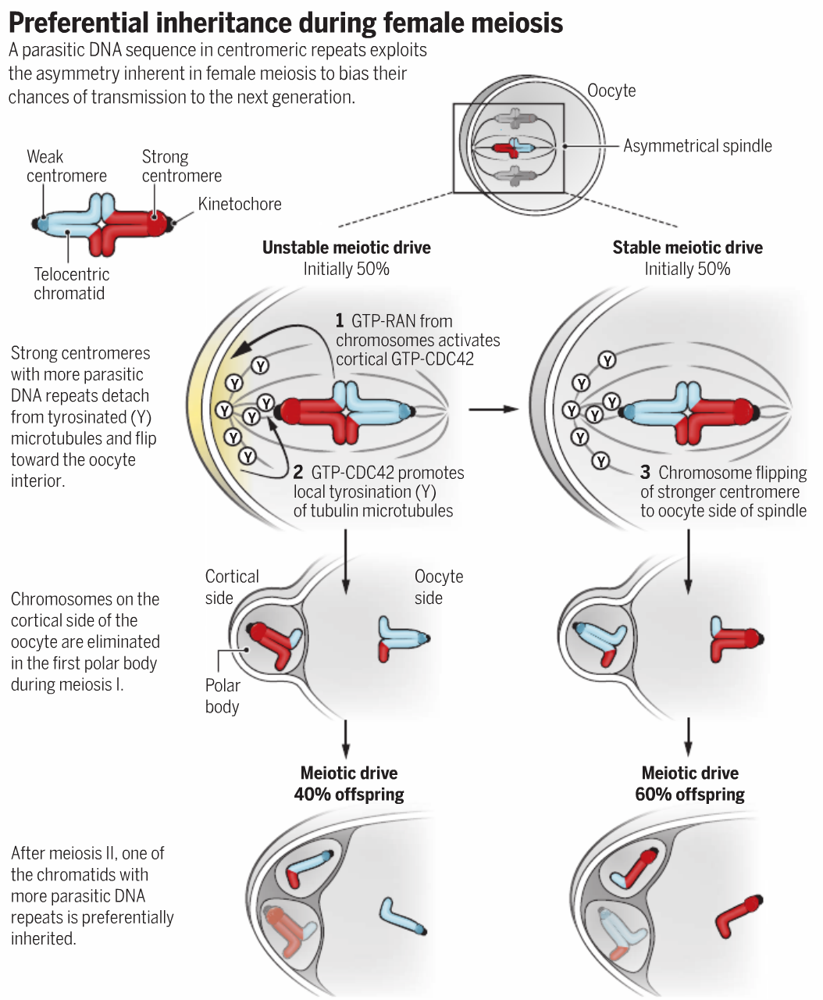

McNally, F. Competing chromosomes explain junk DNA. Science 358, 594–595 (2017).
Observation
One copy of a chromosome is inherited with >50% frequency in, for example, egg-polar body formation
Centromeric DNA
Contain >1000 short (100-300bp) sequences that evolve rapidly in copy number and sequence
Most abundant ncDNA in human genome
Hypothesis of these sequence
- functional
- selfish and promote their own inheritance without benefiting host organism
Example in mouse
Standard lab mouse (CF-1): 20 telocentric
Wild mouse (RB(6.16)): 10 metacentric
Stronger centromere
- Tend to have 6-fold centromeric repeat sequence
- Increase kinetochore protein level
- Prefer to retain in egg
In Rb(6.16) telocentrics is stronger
In CF-1 fusion is stronger
Maybe it’s due to the relative centromere strength of metacentric fusion vs homologous telocentric
Possible mechanism

Strong centromere -> more kinetochore -> less stable attachment to tyrosinated microtubules -> break more often -> “flip” more often -> become stable -> tend to retain in egg